Modules#
MONAI aims at facilitating deep learning in medical image analysis at multiple granularities. This document provides an overview of the modules and highlights the key capabilities.
The core codebase is designed as a library of lightweight, flexible, and comprehensive APIs for users with varying expertise. The building blocks are made easy to understand and use, they are carefully decoupled and can be readily integrated into existing PyTorch programs and larger systems. By leveraging the workflow and bundle APIs, users can also quickly set up efficient and robust model training or evaluation pipelines for various domain-specific applications.
The overall architecture and modules are shown in the following figure:
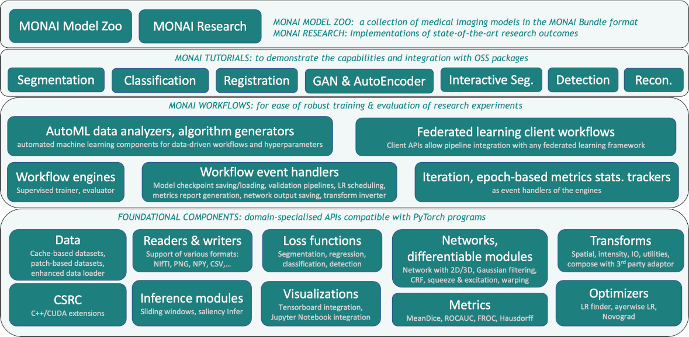
I/O, processing and augmentation#
Medical images require specialized methods for I/O, preprocessing and augmentation. They often follow specific formats,
are handled with specific protocols, and the data arrays are often high-dimensional.
monai.transforms and
monai.data modules include a set of domain-specific APIs
for various deep learning applications:
Transforms with data in array and dictionary styles#
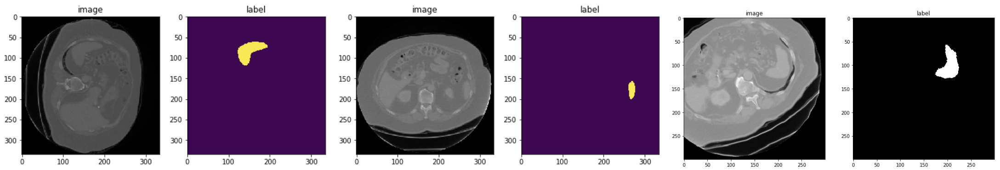
This enables basic image transformations, as well as more complex preprocessing pipelines such as synchronized operations across different modalities and model supervision inputs. [array and dict examples]
Various image patch-based sampling mechanisms#
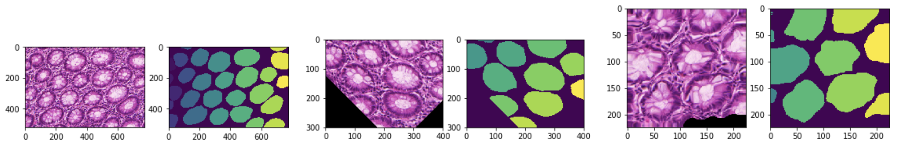
Advanced patch sampling methods are implemented for selective preprocessing, such as weighted, class-balanced sampling from user-specified sampling weight maps. The output can be in a sequence or iterator pattern which allows for different types of shuffling strategies.
Image IO with third-party library integrations#
Several backends are built-in and can support various formats. It is easily extensible for customized format readers.
monai.data.MetaTensor#
Core data structure combines PyTorch native Tensor APIs with metadata handling, so that the deep learning models and pipelines can readily incorporate the meta information. [MetaTensor]
GPU-based accelerations#
Implementations are provided to ensure optimal usage of the underlying hardware resources. [fast training guide]
Determinism and reproducibility#
They can be achieved with fine-level of local controls via the Randomizable API as well as globally
using set_determinism.
Decollating and invertible transforms#
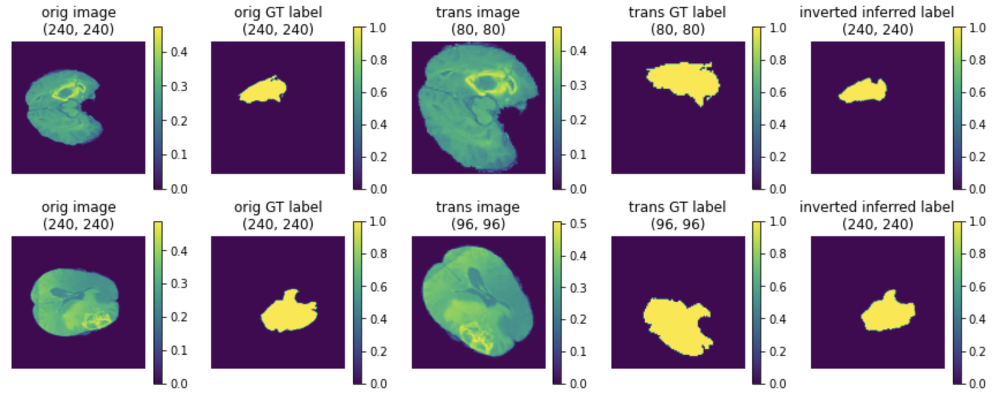 The mini-batch data output from a model can be decollated, post-processed independently, including inverting the outputs to an earlier step of the preprocessing according to the tracked metadata and applied operations. [inverse transform demo]
Enhanced usability#
Additionally, utilities such as DataStats transform, dev_collate, and visualization
methods are provided as
extensions to PyTorch for improved overall debugability.
Datasets and Data Loading#
Following PyTorch’s design pattern, MONAI extends the Dataset and DataLoader APIs as major enhancements in terms of
domain-specific usability and pipeline performance.
Cache IO and transforms data to accelerate training#
Data-driven methods require many (potentially thousands of) epochs of training data reading and preprocessing. MONAI
provides multi-threaded cache-based datasets to accelerate the process [Datasets experiment]. The
cache can be persistent and dynamic (SmartCacheDataset) and reused across different experiments [SmartCache example].
The following figure illustrates the training speedup compared with a regular PyTorch program.
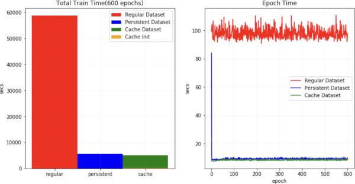
ThreadDataLoader vs. DataLoader#
If the transforms are light-weighted, especially when we cache all the data in RAM, the multiprocessing of PyTorch
DataLoader may cause unnecessary IPC time and decrease GPU utilization. MONAI provides ThreadDataLoader which
executes the transforms in a separate thread:
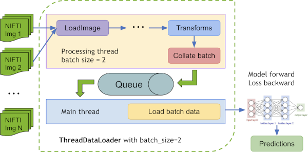
a ThreadDataLoader example is within the Spleen fast training tutorial.
Public datasets#
To quickly get started with popular training data, MONAI provides several ready-to-integrate Dataset classes
(such as MedNISTDataset, DecathlonDataset, TciaDataset), which include data downloading, and support training/evaluation splits generation with transforms.
[Public datasets tutorial]
The common workflow of predefined datasets:
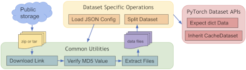
Dataset type extensions#
Other extensions of the Dataset API include: ZipDataset for associating multiple data sources, PatchDataset for
handling both image- and patch-level preprocessing, CSVDataset for multi-modal inputs, and partition_dataset for
cross-validation data preparations.
Differentiable components, networks, losses and optimizers#
Some deep neural network architectures have shown to be particularly effective for medical imaging analysis tasks. MONAI implements reference networks with the aim of both flexibility and code readability.
Predefined layers and blocks#
Network layers and blocks are in general implemented to be compatible with spatial 1D, 2D and 3D inputs. Users can easily integrate the layers, blocks and networks as part of their customised pipelines. Various utilities are provided to leverage the existing model weights, e.g. from a bundle in MONAI model-zoo.
C++/CUDA optimized modules#
To further accelerate the domain-specific routines, MONAI C++/CUDA implementation is introduced as extensions of the PyTorch native implementations. MONAI provides the modules using the two ways of building C++ extensions from PyTorch:
via
setuptools, for modules includingResampler,Conditional random field (CRF),Fast bilateral filtering using the permutohedral lattice.via just-in-time (JIT) compilation, for the
Gaussian mixturesmodule. This approach allows for dynamic optimisation according to the user-specified parameters and local system environments. The following figure shows results of MONAI’s Gaussian mixture models applied to tissue and surgical tools segmentation: 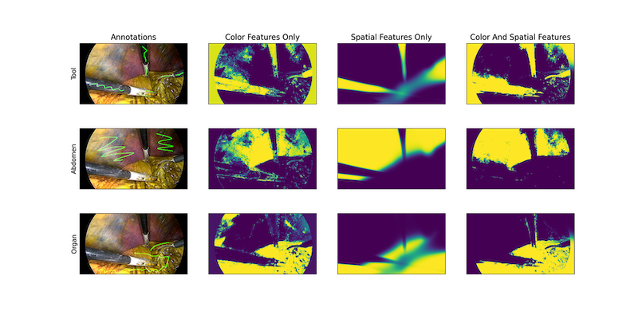
Losses and optimizers#
Commonly used loss functions for various applications are (re-)implemented from the literature, such as DiceLoss, GeneralizedDiceLoss, TverskyLoss, DiceFocalLoss.
The numerical optimizations and relevant utilities include Novograd and LearningRateFinder.
The following figure shows a learning rate search process.
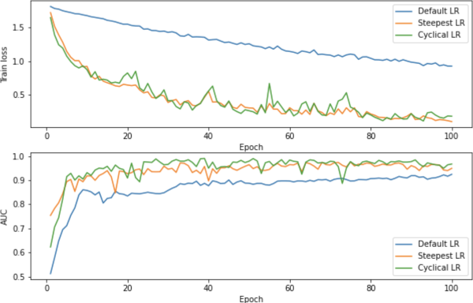
Evaluation#
To run model inferences and evaluate the model quality, MONAI provides reference implementations for the relevant widely-used approaches. Currently, several popular evaluation metrics and inference patterns are included:
Sliding window inference#
For model inferences on large volumes, the sliding window approach is a popular choice to achieve high performance while
having flexible memory requirements (_alternatively, please check out the latest research on model parallel
training. It also supports
overlap and blending_mode configurations to handle the overlapped windows for better performances.
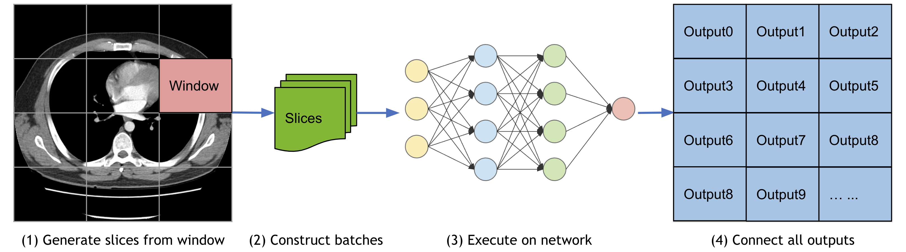
Metrics for medical tasks#
Various useful evaluation metrics have been implemented to measure the quality of medical image specific models.
These include Mean Dice, ROCAUC, Confusion Matrices, Hausdorff Distance, Surface Distance, Occlusion Sensitivity.
The APIs also support multi-processing computation.
Report generation#
MetricsSaver is provided to write the final metric summary report: mean, median, max, min, <int>percentile, std:
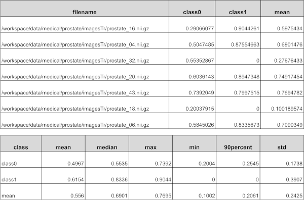
Visualization#
Beyond the simple point and curve plotting, intuitive interfaces are provided to visualize multidimensional data as GIF animations in TensorBoard. This could provide a quick qualitative assessment of the model by visualizing, for example, the volumetric inputs, segmentation maps, and intermediate feature maps. A runnable example with visualization is available at UNet training example. To work with ignite program, MONAI also provides several ignite handlers to visualize training curve and metrics with TensorBoard or MLFlow, more details is available in TensorBoard and MLFlow handlers example.
To easily visualize a 3D image as frames of 2D images, MONAI provides the utility matshow3d based on matplotlib library. It can plot frames of image for the specified dimension, showing a spleen 3D image as example:
matshow3d(volume=image, figsize=(100, 100), every_n=10, frame_dim=-1 show=True, cmap="gray")
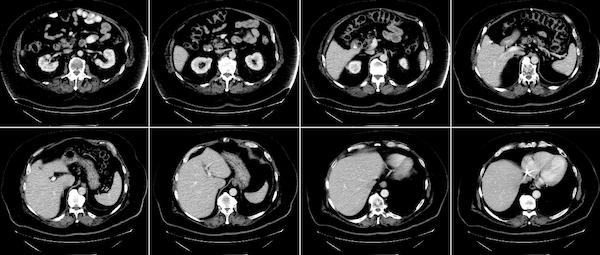
MONAI also provides the blend_images utility to blend the image and label to an RGB color image to better visualize the segmentation regions with the specified cmap mode and weights, etc. Showing a spleen segmentation image and the corresponding label as example:
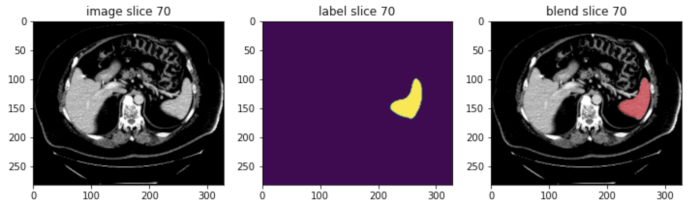
For more details of TensorBoard utility, matshow3d and blend_images, please check the visualization tutorial.
And to visualize the class activation mapping for a trained classification model, MONAI provides CAM, GradCAM, GradCAM++ APIs for both 2D and 3D models:
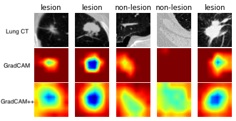
The above example is generated by computing GradCAM/GradCAM++ from a lung CT lesion classification model.
Workflows#
MONAI engines and workflows enable quick start of training and evaluation experiments.
These features decouple the domain-specific components and the generic machine learning processes.
They also provide a set of unify APIs for higher level applications (such as AutOML, Federated Learning).
The trainers and evaluators of the workflows are compatible with pytorch-ignite Engine and Event-Handler mechanism.
General workflows pipeline#
The workflow and some of MONAI event handlers are shown as below [Workflow examples]:
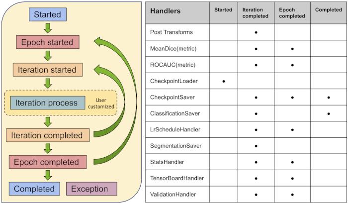
EnsembleEvaluator#
A typical ensemble procoess is implemented as a ready-to-use workflow [Cross validation and model ensemble tutorial]:
Split all the training dataset into K folds.
Train K models with every K-1 folds data.
Execute inference on the test data with all the K models.
Compute the average values with weights or vote the most common value as the final result.
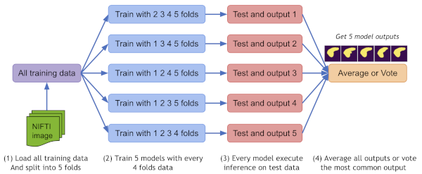
Decollate batch data for flexible post-processings#
decollate batch is introduced since MONAI v0.6, which simplifies the post-processing transforms and provides flexible following operations on a batch of data with various data shapes. It can decollate batched data (e.g. model predictions) into a list of tensors, for the benefits such as:
enabling postprocessing transforms for each item independently – randomised transforms could be applied differently for each predicted item in a batch.
simplifying the transform APIs and reducing the input validation burdens because both the preprocessing and postprocessing transforms now only need to support the “channel-first” input format.
enabling the
Invertdtransform for the predictions and the inverted data with different shapes, as the data items are in a list, not stacked in a single tensor.allowing for both batch-first tensor and list of channel-first tensors in a flexible metric computation. [decollate batch tutorial]
A typical process of decollate batch is illustrated as follows (with a batch_size=N model predictions and labels as an example):
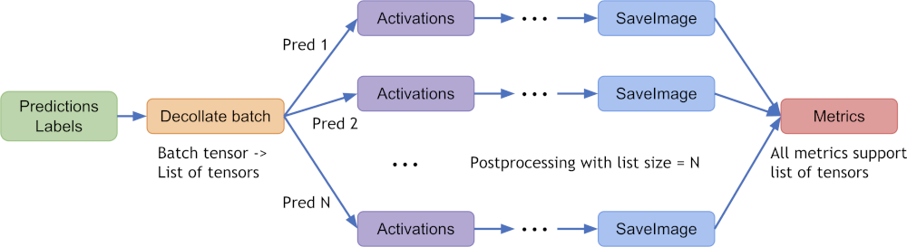
Easy to integrate into popular workflows#
Except for the pytorch-ignite based monai.engines, most of the MONAI modules could be used independently or combined
with other software packages. For example, MONAI can be easily integrated into popular frameworks such as
PyTorch-Lightning
and MLflow.
Bundle#
The objective of a MONAI bundle is to define a packaged model which includes the critical information necessary to allow users and programs to understand how the model is used and for what purpose. A bundle includes the stored weights of a single network as a pickled state dictionary plus optionally a Torchscript object and/or an ONNX object. Additional JSON files are included to store metadata about the model, information for constructing training, inference, and post-processing transform sequences, plain-text description, legal information, and other data the model creator wishes to include. More details are available at bundle specification.
The key benefits of bundle are to define the model package and support building Python-based workflows via structured configurations:
Self-contained model package include all the necessary information.
Structured config can be used to easily reconstruct or prototype deep learning workflows.
Config files can provide good readability and usability by separating parameter settings from the Python code.
Config files can describe flexible workflow and components, allows for different low-level Python implementations
Learning paradigms at a higher level such as federated learning and AutoML can be decoupled from the component details.
A typical bundle example can include:
ModelName
┣━ configs
┃ ┗━ metadata.json
┣━ models
┃ ┣━ model.pt
┃ ┣━ *model.ts
┃ ┗━ *model.onnx
┗━ docs
┣━ *README.md
┗━ *license.txt
Details about the bundle config definition and syntax & examples are at config syntax. A step-by-step get started tutorial notebook can help users quickly set up a bundle. [bundle examples, model-zoo]
Federated Learning#
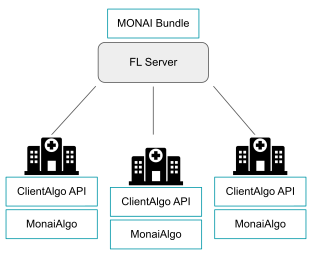
Using the MONAI bundle configurations, we can use MONAI’s MonaiAlgo
class, an implementation of the abstract ClientAlgo class for federated learning (FL),
to execute bundles from the MONAI model zoo.
Note that ClientAlgo is provided as an abstract base class for
defining an algorithm to be run on any federated learning platform.
MonaiAlgo implements the main functionalities needed
to run federated learning experiments, namely train(), get_weights(), and evaluate(), that can be run using single- or multi-GPU training.
On top, it provides implementations for life-cycle management of the component such as initialize(), abort(), and finalize().
The MONAI FL client also allows computing summary data statistics (e.g., intensity histograms) on the datasets defined in the bundle configs
using the MonaiAlgoStats class.
These statistics can be shared and visualized on the FL server.
NVIDIA FLARE, the federated learning platform developed by NVIDIA, has already built the integration piece
with ClientAlgo to allow easy experimentation with MONAI bundles within their federated environment.
Our [federated learning tutorials] shows
examples of single- & multi-GPU training and federated statistics workflows.
Auto3dseg#
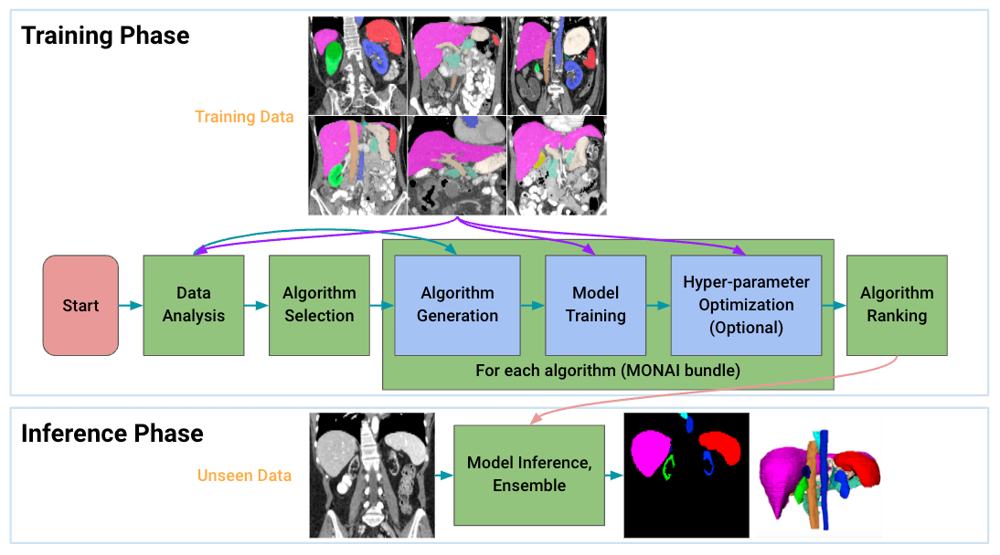
Auto3DSeg is a comprehensive solution for large-scale 3D medical image segmentation. It leverages the latest advances in MONAI and GPUs to efficiently develop and deploy algorithms with state-of-the-art performance. It first analyzes the global information such as intensity, dimensionality, and resolution of the dataset, then generates algorithms in MONAI bundle format based on data statistics and algorithm templates. Next, all algorithms initiate model training to obtain checkpoints with the best validation performance. Finally, the ensemble module selects the algorithms via ranking trained checkpoints and creates ensemble predictions.
The solution offers different levels of user experience for beginners and advanced researchers. It has been tested on large-scale 3D medical imaging datasets in different modalities.
GPU acceleration, performance profiling and optimization#
MONAI provides state-of-the-art performance optimization methods including:
Auto mixed precision (AMP)#
Simply set amp=True/False in SupervisedTrainer or SupervisedEvaluator during training or evaluation to enable/disable AMP
Example benchmark results are as follows [AMP training tutorial]:
training with AMP ON/OFF on a NVIDIA V100 GPU with CUDA 11 and PyTorch 1.6:
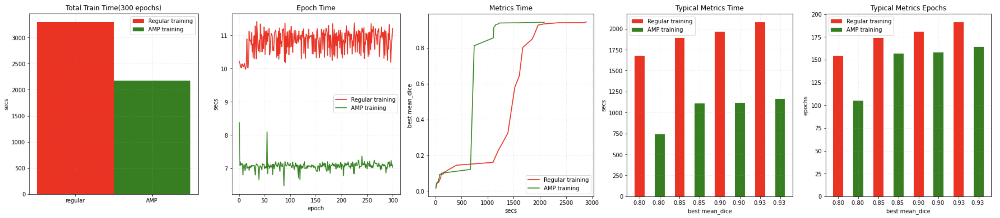
training with AMP ON/OFF on a NVIDIA A100 GPU with CUDA 11 and PyTorch 1.6:
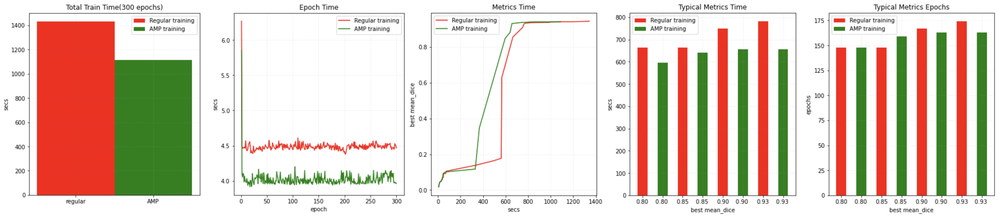
Several tools including DLProf, Nsight, NVTX and NVML can be used with MONAI to identify the performance bottleneck. [profiling tutorial]
Distributed training#
The distributed data-parallel APIs of MONAI are compatible with the native PyTorch distributed module, pytorch-ignite distributed module, Horovod, XLA, and the SLURM platform. [distributed training tutorial]
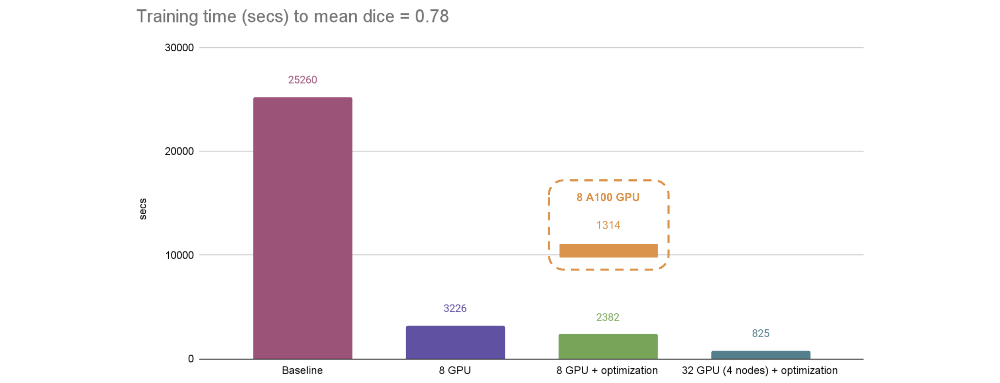
The fast training tutorial
combines AMP with CacheDataset, GPU cache, GPU transforms, ThreadDataLoader, tuning of networks and optimizers, can achieve substantial speedup compared
with a PyTorch regular implementation.